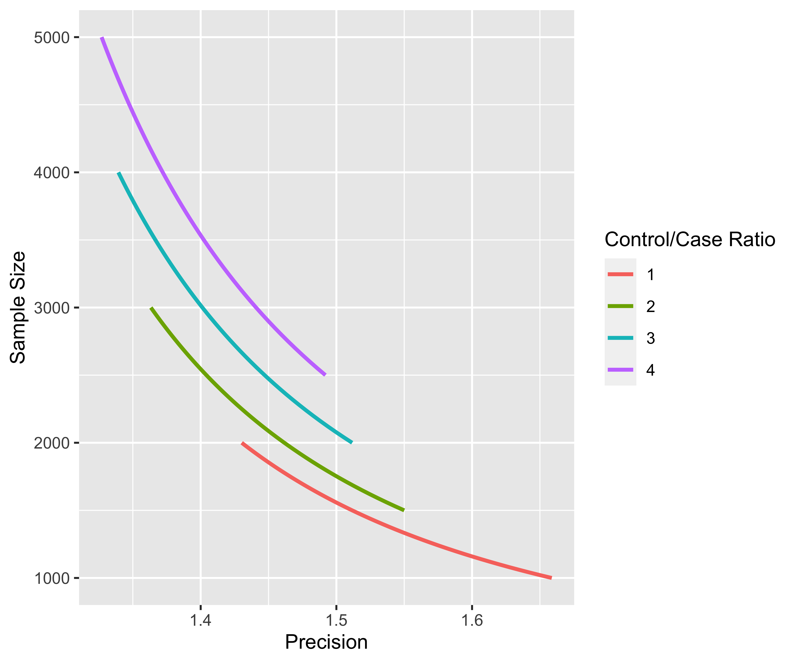
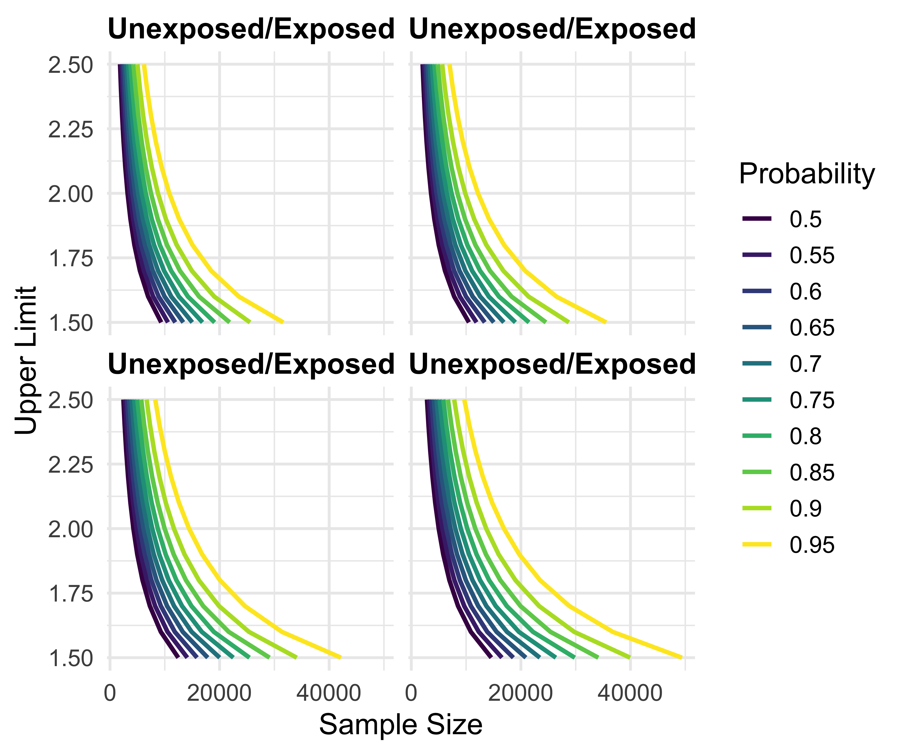
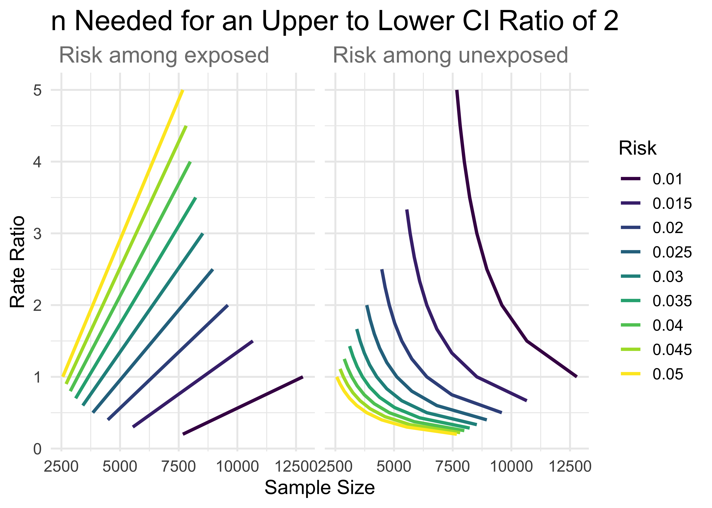
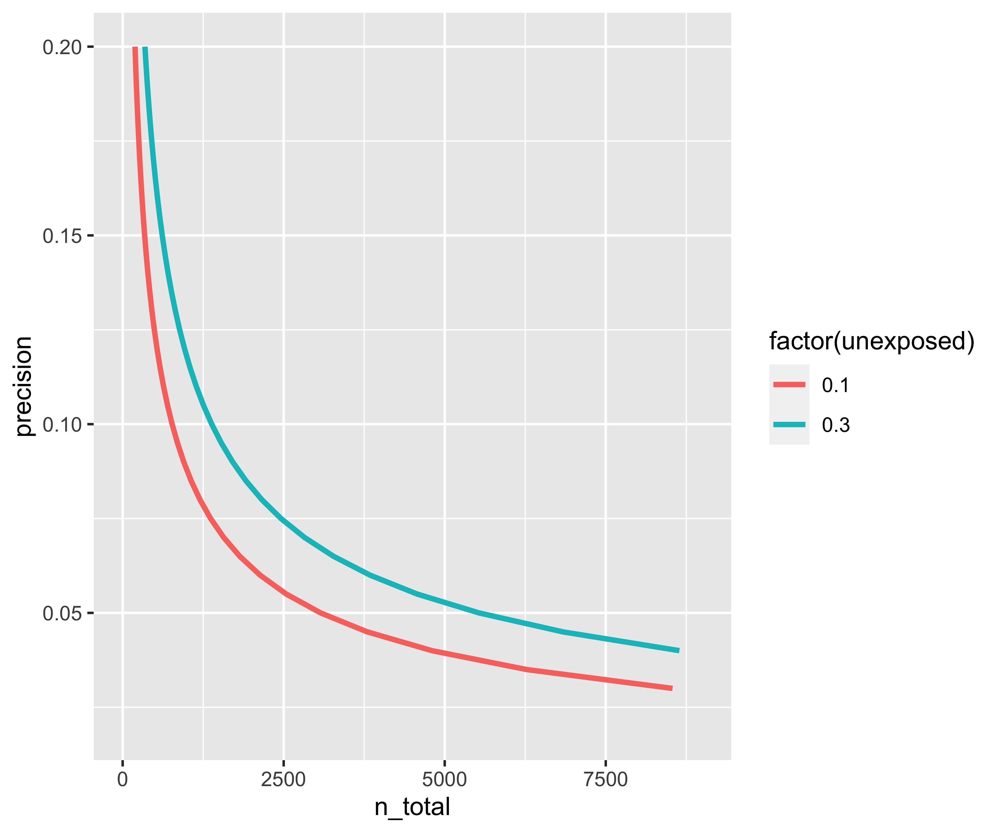
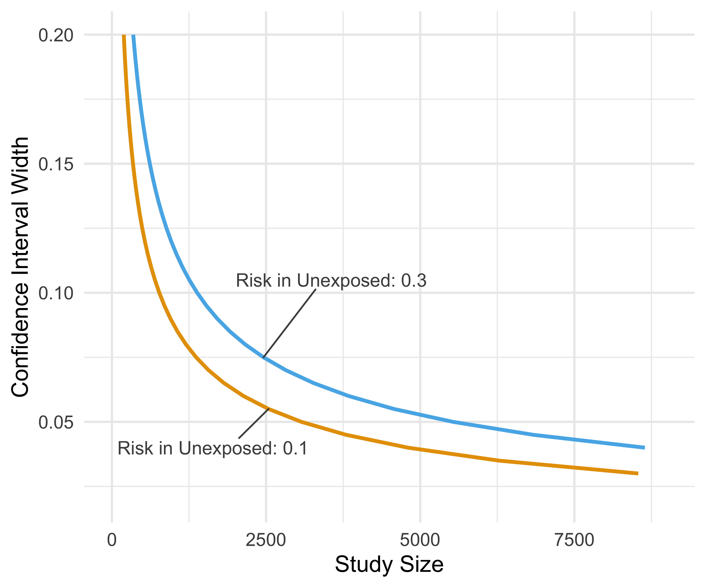

vignettes/introduction-to-precisely.Rmd
introduction-to-precisely.Rmdprecisely is a study planning tool to calculate sample size based on precision rather than power. Power calculations are focused on whether or not an estimate will be statistically significant; calculations of precision are based on the same principles as power calculation but turn the focus to the width of the confidence interval.
These tools are based on the work of Rothman and Greenland.
precisely has functions for studies using risk differences, risk ratios, rate differences, rate ratios, and odds ratios. The heart of these calculations is the desired precision. For ratio measures, this is the ratio of the upper to lower limit of the confidence interval. For difference measures, this is the absolute width of the confidence interval. To calculate sample size for a given precision, you also need proportions for the two groups (the risk or rate in the exposed and unexposed participants in a cohort study or the exposure prevalence in the cases and controls in case-control studies), the ratios of the two groups (the unexposed to the exposed in cohort studies or controls to cases in case-control studies), and the desired confidence interval probability. The default is 95%.
Let’s say we want to calculate the sample size needed to estimate a 90% CI for a risk difference of .1 with an absolute width of .08. Here, the risk among the exposed is .4, the risk among the unexposed is .3, and there are three times as many unexposed participants.
library(tidyr) library(dplyr) library(purrr) library(ggplot2) library(precisely) n_risk_difference( precision = .08, exposed = .4, unexposed = .3, group_ratio = 3, ci = .90 ) #> # A tibble: 1 x 9 #> n_exposed n_unexposed n_total risk_difference precision exposed unexposed #> <dbl> <dbl> <dbl> <dbl> <dbl> <dbl> <dbl> #> 1 524. 1573. 2097. 0.1 0.08 0.4 0.3 #> # … with 2 more variables: group_ratio <dbl>, ci <dbl>
We need 525 exposed participants and 1,573 unexposed participants for a total sample size of 2,098. For the same population, what sample size would we need to estimate a risk ratio where the upper bound of a 95% CI has a ratio of 2 with the lower bound?
n_risk_ratio( precision = 2, exposed = .4, unexposed = .3, group_ratio = 3 ) #> # A tibble: 1 x 9 #> n_exposed n_unexposed n_total risk_ratio precision exposed unexposed #> <dbl> <dbl> <dbl> <dbl> <dbl> <dbl> <dbl> #> 1 72.8 219. 291. 1.33 2 0.4 0.3 #> # … with 2 more variables: group_ratio <dbl>, ci <dbl>
Here we only need 73 exposed participants and 219 unexposed participants, a total sample size of 292.
precisely also provides functionality to calculate the precision of an estimate given a sample size. For instance, in a case-control study with 500 cases, 1,000 controls and prevalences among the cases and controls of .6 and .4, respectively, what is the ratio of the upper bound to the lower bound?
precision_odds_ratio( n_cases = 500, exposed_cases = .6, exposed_controls = .4, group_ratio = 2 ) #> # A tibble: 1 x 9 #> precision odds_ratio n_cases n_controls n_total exposed_cases exposed_controls #> <dbl> <dbl> <dbl> <dbl> <dbl> <dbl> <dbl> #> 1 1.55 2.25 500 1000 1500 0.6 0.4 #> # … with 2 more variables: group_ratio <dbl>, ci <dbl>
We can expect that, on average, the upper confidence interval will be 1.55 times as large as the lower confidence interval.
precisely also has a set of functions for a different way of using precision: to calculate sample size based on probability that the upper limit of the confidence interval is below a level of concern. The idea here is that, if there is no true effect, we want to know how likely it is that we have a high estimate. For instance, for a rate ratio where the effect is null, we can calculate the sample size for which there is a 90% probability that the upper limit will be at or below 2.
upper_rate_ratio( upper_limit = 2, prob = .90, exposed = .01, unexposed = .01, group_ratio = 1 ) #> # A tibble: 1 x 10 #> n_exposed n_unexposed n_total rate_ratio upper_limit prob exposed unexposed #> <dbl> <dbl> <dbl> <dbl> <dbl> <dbl> <dbl> <dbl> #> 1 4374. 4374. 8748. 1 2 0.9 0.01 0.01 #> # … with 2 more variables: group_ratio <dbl>, ci <dbl>
To calculate several values and plot them, use map_precisely() and the included plot_*() functions and dplyr::group_by() to set the variable for the color aesthetic.
map_precisely( precision_odds_ratio, n_cases = seq(from = 500, to = 1000, by = 10), exposed_cases = .6, exposed_controls = .4, group_ratio = 1:4 ) %>% group_by("Control/Case Ratio" = factor(group_ratio)) %>% plot_precision()

Since the plotting functions are just ggplots, they are easy to customize. precisely also has a minimalist theme for ggplots, theme_precisely().
map_precisely( upper_rate_ratio, upper_limit = seq(1.5, 2.5, by = .1), prob = seq(.50, .95, by = .05), exposed = .01, unexposed = .01, group_ratio = 1:4 ) %>% group_by("Probability" = factor(prob)) %>% plot_upper_limit(line_size = 1) + scale_color_viridis_d() + scale_x_continuous(breaks = c(0, 20000, 40000)) + theme_precisely() + theme(legend.position = "right") + facet_wrap(~ group_ratio, labeller = as_labeller(function(x) paste("Unexposed/Exposed:", x)))

map_precisely() is just a thin wrapper around tidyr::crossing() and purrr::pmap_dfr(). purrr::pmap_dfr() takes a data frame where the column names correspond to the arguments in the function. tidyr::crossing() takes the arguments and makes all possible combinations. Likewise, the plotting functions are primarily wrappers around ggplots with geom_line(). It’s easy, then, to create create them from scratch.
arguments <- crossing( precision = 2, exposed = seq(from = .01, to = .05, by = .005), unexposed = seq(from = .01, to = .05, by = .005), group_ratio = 1 ) arguments %>% pmap_dfr(n_rate_ratio) %>% gather(key, value, exposed, unexposed) %>% ggplot(aes(n_total, rate_ratio, col = factor(value))) + geom_line(size = 1.1) + facet_wrap(~key, labeller = as_labeller(function(x) paste("Risk among", x))) + labs( title = "n Needed for an Upper to Lower CI Ratio of 2", x = "Sample Size", y = "Rate Ratio", color = "Risk" ) + scale_color_viridis_d() + theme_minimal(14) + theme( plot.title = element_text(size = 20, margin = margin(.01, .01, .01, .01)), strip.text = element_text(size = 16, color = "grey50", hjust = 0) )

You can also be more exact in the argument values by creating your own data frames. Here’s an example recreating the figure from Rothman and Greenland’s paper.
lower_risk <- tibble( precision = seq(from = .02, to = .20, by = .005), exposed = .2, unexposed = .1, group_ratio = 1 ) higher_risk <- tibble( precision = seq(from = .02, to = .20, by = .005), exposed = .4, unexposed = .3, group_ratio = 1 ) risk_difference_data <- bind_rows(lower_risk, higher_risk) %>% pmap_dfr(n_risk_difference) risk_difference_data #> # A tibble: 74 x 9 #> n_exposed n_unexposed n_total risk_difference precision exposed unexposed #> <dbl> <dbl> <dbl> <dbl> <dbl> <dbl> <dbl> #> 1 9604. 9604. 19207. 0.1 0.02 0.2 0.1 #> 2 6146. 6146. 12293. 0.1 0.025 0.2 0.1 #> 3 4268. 4268. 8537. 0.1 0.03 0.2 0.1 #> 4 3136. 3136. 6272. 0.1 0.035 0.2 0.1 #> 5 2401. 2401. 4802. 0.1 0.04 0.2 0.1 #> 6 1897. 1897. 3794. 0.1 0.045 0.2 0.1 #> 7 1537. 1537. 3073. 0.1 0.05 0.2 0.1 #> 8 1270. 1270. 2540. 0.1 0.055 0.2 0.1 #> 9 1067. 1067. 2134. 0.1 0.06 0.2 0.1 #> 10 909. 909. 1818. 0.1 0.065 0.2 0.1 #> # … with 64 more rows, and 2 more variables: group_ratio <dbl>, ci <dbl>
While the plotting functions support all the calculation functions in precisely, it’s easy to replicate in raw ggplot.
rg_plot <- risk_difference_data %>% ggplot(aes(n_total, precision, col = factor(unexposed))) + geom_line(size = 1.1) + xlim(c(0, 9000)) rg_plot

Of course, the real power of combining this package with ggplot is to customize it.
rg_plot + ggrepel::geom_text_repel( col = "grey30", data = function(x) filter(x, near(n_total, 2500, 100)), aes(label = paste("Risk in Unexposed:", unexposed)), size = 4, segment.size = .5, nudge_x = c(-900, 1100), nudge_y = c(-.015, .03), ) + labs( x = "Study Size", y = "Confidence Interval Width", color = "Risk in\nUnexposed" ) + theme_precisely() + theme(legend.position = "none", plot.title = element_text(size = 16), plot.subtitle = element_text(size = 12, color = "grey60")) + scale_color_manual(values = c("#E69F00", "#56B4E9"))
